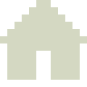

Abra no Samsung Internet com o modo escuro ligado. Quais letras mostram o ícone claro e visível (seção A) e a caixa dourada com cadeado preto (seção B)?
A — ícone claro (deve aparecer bege-claro sobre o cartão escuro)
A1
máscara + background-color (como é hoje)
A2SVG inline com rect
A3SVG inline com path
A4

PNG claro (img)
A5
máscara + gradiente (sem background-color)
A6
fundo preto + filter invert
A7
máscara + box-shadow inset
A8
máscara + border grossa
B — caixa dourada do cadeado (deve ser dourada, cadeado preto)
B1
background-color (como é hoje)
B2
gradiente (background-image)
B3
box-shadow inset
B4
border dourada grossa
B5
SVG inline como fundo
B6
PNG dourado de fundo
B7
fundo preto + filter (inverte p/ azul-ouro?)
Como deve ficar: fundo quase preto esverdeado; ícones da seção A em bege-claro; caixas da seção B douradas com o cadeado preto.